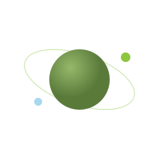

Agenda · 24 noviembre 2026
Datatón · Lanzamiento suave del Observatorio de la Tierra
Soft launch del Datalab · martes 24 de noviembre de 2026 · Universidad Externado de Colombia
Programa del día
Horarios orientativos- 08:00Registro y bienvenida
- 08:30Palabras de apertura (Rector)
- 08:40Panel: territorio, cooperación y datos (45 min)
- 09:25Conversatorio inspiracional (Enrique Medina, Agrometers)
- 09:45Observatorio de la Tierra y piloto Bolívar (Alejandro Díaz, Gideon Blaauw)
- 10:05Anuncio del Datalab: sandboxes y gobernanza de datos
- 10:15Demo en vivo Air4U y preguntas
- 10:45Instrucciones y arranque del datatón
- 11:00Trabajo de equipos con monitores (bloque 1)
- 12:30Almuerzo
- 13:30Trabajo de equipos y preparación del pitch (bloque 2)
- 16:00Pitches finales: 6 equipos preseleccionados por los monitores
- 16:40Deliberación del jurado
- 16:50Cierre: top 5 (acceso al Living Lab + mentoría CTH, paso al piloto 2027)
- 17:00Fin